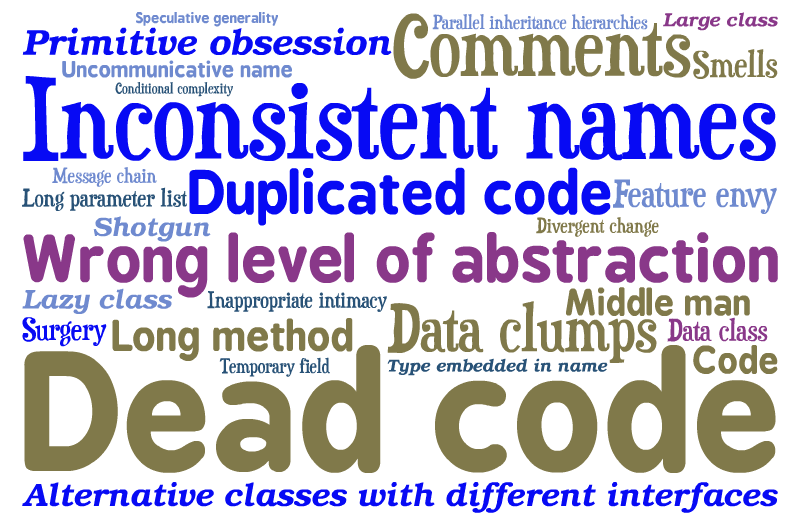

Clean Code
in practice
Thanks
ITAKE team
Jérôme Avoustin
who wrote the biggest part of this presentation :)
You !
Antoine Vernois
Software Craftsman - FreelanceAgenda
- Why clean code ?
- What is clean code ?
- bad smells
- good things
Disclaimer
- Object Oriented Language
- We won't go into details
- Some points will look stupidly simple

Agile & Quality
Continuous attention to technical excellence and good design enhances agility.
Agile Manifesto, 9th principle
Why quality ?
Agile & Quality (again)
Responding to change over following a plan.Agile Manifesto, 4th value
What is quality ?
A software is of good quality if the cost to add a feature does not change over time.Jérôme Avoustin
What is a clean code ?
- tested !
- easy to read
- reveals its intention
- no duplication
- dependance are explicite
About tests
When I hear tests are for those who don't know how to code

Smells
Smells
- Singleton
- Tight coupling
- Untestable
- Premature Optimisation
- Indescriptive naming
- Duplication
Good practices
Good practices
- Single Responsability
- Open-closed principle
- Liskov substitution principle
- Interface segregation principle
- Dependency inversion principle
Naming
- names should reveal the intent
- alt+shift+r is your friend (in eclipse)
- ...
Let's see for real.
Avoid duplication
Don't repeat yourself !
Abstraction
1 level by method
Abstraction
Demeter's Law
Don't talk to stranger
Tight Coupling
It's bad !
- Tests
- Reuse
- ...
Dependancy Injection
public class A {
private B b;
public void execute(int i) {
b = new B();
C c = new C();
if (i <= 3) {
b.executeB();
} else {
c.executeC();
}
}
}
Methods
Short
Comments
Comments are always failureUncle Bob
Don't comment bad code. Rewrite it.Brian W. Kernighan, P.J. Plaugher
Comments from real life
/*
* A comment to please checkstyle
*/
/*
* Set the port
*
* @params port
*/
public void setPort(Port port) {this.port=port}
...
} /* end for */
dao.flush();
default :
break;
} /* end switch */
} /* end if */
} /* end if */
} catch ...
Comments : the exception
explain the Why !
Comments
Test tells me What
Code tells me How
Comment, if needed, tells me why
Handling Exception
Fail Fast
- Do not check exception
- Manage exception as high as possible
- Never ever return null !
Tests
The give you confidence to change the code.
- one test, one assert
- readibility
- tests document your code
A test should tell you a story
Tests are first class citizen !
some more advices
Don't think inheritance, think polymorphism
Don't think if/switch, think polymorphism
avoid singletons
Did i warn you i will repeat myself ?Read list


Quotes
Any fool can write code that a computer can understand. Good programmers write code that human can understand.Martin Fowler
Always code as if the guy who ends up maintaining your code will be a violent psychopath who knows where you live.Martin Golding
...if you're afraid to change something it is clearly poorly designed.Martin Fowler